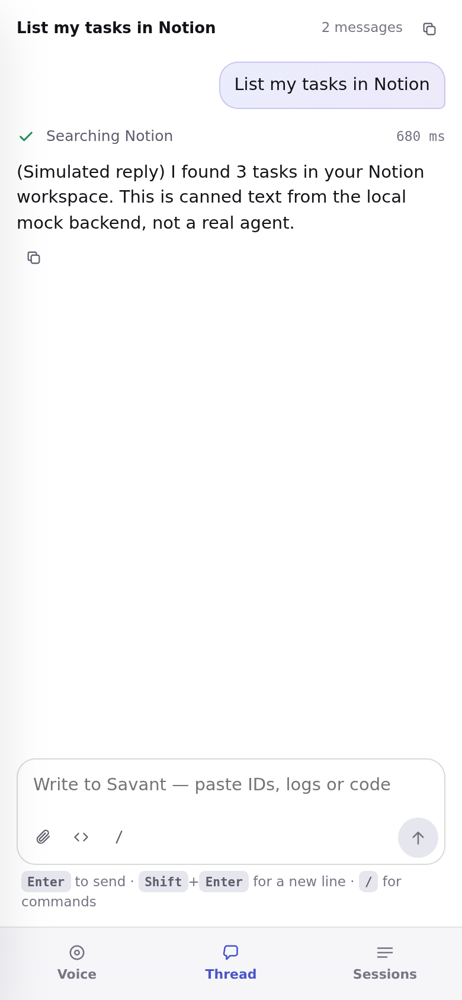

A voice-first personal AI agent for Microsoft Azure, built with LangGraph and Microsoft Foundry.
One owner, real tools: a Notion workspace, a Linux VM over SSH, project documents and the web. Anything that changes something goes through independent checks before it runs.
An assistant that only talks is limited. One that can write to a workspace or run shell commands is useful, and dangerous: a single wrong step does real damage.
The risk is sharpest when the model has just read untrusted content, such as a web page or a Notion page, and then acts.
Authorizing access is not authorizing an action. Savant keeps the two apart.
1
One owner, voice or textTalk to it or type; the answer can be spoken.
2
Real tools, not demosNotion, a Linux VM over SSH, project documents, the web.
3
No change without a specific, current approvalAny doubt, any missing identity: nothing is written.
4
Azure, without stored keysManaged identities and Key Vault; built to learn Azure hands on.
In scope
A single owner · chat and voice · Notion · SSH to one VM · documents per project · web search and code through the Foundry Toolbox
Out of scope or not built
Multiple users · Gmail · retrieval over past sessions · hosting the web client in Azure (it runs locally, by design)
What exists today, and how far each part was proven
Validated live
Voice and text
Live speech recognition, a spoken answer with a neural voice. The pipeline ran end to end; the browser microphone has not been checked yet.
Validated live
Notion
Search and read pages. Writes only after the owner approves that exact operation, then checked by an independent readback.
Validated live
Linux VM over SSH
Commands run on a dedicated VM. A second model call judges each one: run, confirm or refuse.
Tested with doubles
Project documents
Upload files to a project and ask about them. Azure AI Search, with the project filter set by the server, never by the model.
Tested with doubles
Web search and code
Through the Foundry Toolbox. Each call is judged by tool name; anything unknown needs the owner's consent.
Tested with doubles
Projects and sessions
Kept in Cosmos DB: the owner's text only, never tool arguments or results. The web client also runs offline on a mock backend.
Validated live real services, dated reportsTested with doubles tests only, not end to endNot built Gmail · session recall
Savant AzurianSource: docs/status.md03 / 08
04 — System architecture
Three pieces, one owner-only path to the tools
Web clientRuns on the owner's computer. Azure hosting was ruled out (ADR-0010).
Backend (BFF)Owner-only gate, Notion OAuth callback, projects and sessions in Cosmos DB, uploads. It sets the project; the model never chooses it.
Hosted agentThe LangGraph graph served on Foundry's Responses protocol. It reaches Notion, the VM and the documents; Cosmos DB is for the backend only.
Savant AzurianSource: SDD-002, README04 / 08
05 — How it works
One Notion write, followed from request to result
Turn 1
01
The owner asks
“Append this line to my Sandbox page.”
Turn 1
02
The policy classifies the tool
Only a tool marked read-only runs freely. This one is not, so it is held. Nothing is sent to Notion.
Turn 1
03
The server asks
The server writes the question from validated arguments, never the model. A single-use encrypted ledger entry binds operation, owner, conversation and expiry.
Turn 2
04
The owner answers
“ui, lance” (French, “yes, go”). Approval can only come from a later turn.
Turn 2
05
A second model judges
An isolated call sees only the owner's message and the disclosed proposal: approve, reject or ask. Invalid output means no write.
Turn 2
06
Claim, then write once
The ledger entry is claimed before any network call and is never recovered. One write, then a result.
Observed in the live validation · 25 Oct 2026
Approved write: exactly one marker found by an independent fetch
Refused write: the page matched the original in full
Replaying the approval returned no_pending_approval
An unrelated conversation could not use the pending operation
A forged owner header did not replace the authenticated owner
After a session restart, the pending operation was restored and written once
The same idea for shell commands
The command judge answers RUN, CONFIRM or REFUSE. A confirmed command runs only on a later turn, with the same fingerprint, once. A judge failure counts as CONFIRM.
Savant AzurianSources: ADR-0017, ADR-0018, Notion live validation05 / 08
06 — Technical decisions
Each decision has a reason and a cost
Decision
Why
What it costs
Two authorization layersADR-0017
OAuth opens a workspace; a separate judge authorizes one operation. LangGraph interrupts could not resume on a plain “yes”, and the main model is the component under attack.
One extra model call per approval.
A judge for every commandADR-0018
Shell is too open for a fixed list. A second call reads each command; a coded floor only backs it up.
About 1 to 1.5 s per command. A model's judgement is not a security boundary.
Outside content is dataADR-0019
Web, Notion and tool results are wrapped as untrusted and the prompt says they are never orders.
It raises the bar but does not suffice: the judges stay the real locks.
Keyless accessADR-0020
Entra ID and managed identities everywhere. Only three secrets, in Key Vault.
Easy Auth's client secret expires after 365 days and must be renewed.
Server-side project filterADR-0021
The project filter is imposed by the server on every search, so the model cannot read another project.
The model cannot choose to search across projects.
Bounded tool executionADR-0022
Timeouts, one retry for reads only, a stop after 8 tool steps, results capped at 20,000 characters.
Long tasks can stop early.
Savant AzurianFull records: docs/adr/06 / 08
07 — Demonstration & proof
What can be checked, not just claimed

The web client, running locally on its mock backend: the reply shown is canned text, not the real agent.
Automated tests
686 Python and 254 web tests pass. No Python test touches Azure. Ruff and the documentation check are clean.
16 Nov 2026
Consent judge
44 of 44 cases in pass^5 on the production model. The earlier prompt failed 13 to 15 of 32 cases at pass^4, so the change was measured.
7 Nov 2026
Command judge
36 of 36 cases in pass^5, no judge failure.
7 Nov 2026
Notion, live
Read, approved write with independent readback, refused write with no effect, replay blocked.
25 Oct 2026
SSH, live
A read ran. A deletion was refused. An approved deletion ran on the next turn and failed on a real permission, reported honestly.
2 Nov 2026
Voice, live
Spoken question, recognition (1.1 s), agent, synthesis (1.2 s), spoken answer. The agent step took 28 s, and 72 s with a Notion call.
A prototype, not a product. Built around one owner's Azure subscription, to learn and to explore safe tool use. Running it needs your own Azure resources.
The infrastructure template has never been deployed. It compiles and lints in CI; the agent itself ran live from the original setup.
Not yet checked: Notion OAuth revocation, the browser microphone, document upload screens, Safari, Firefox and phones. Not built: Gmail and recall of past sessions.
Slow answers: 28 s to 72 s for the agent step in the voice test, a long wait in a spoken exchange.
SSH port open to the Internet in the reference setup, guarded by the key, a pinned host key and a dedicated account.